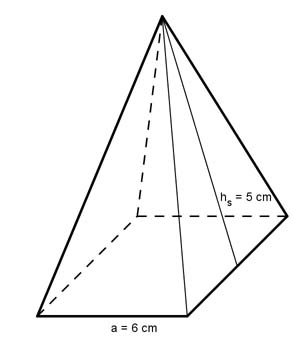
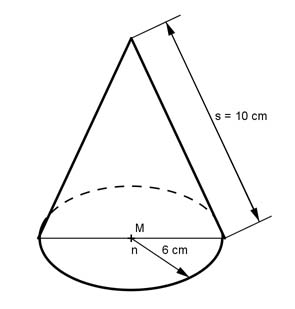
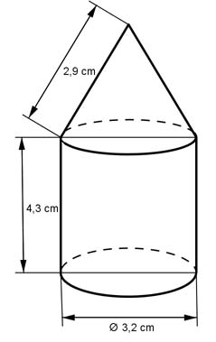
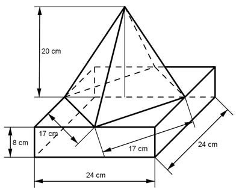
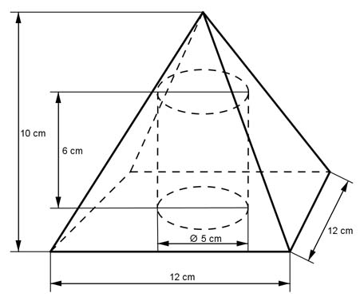
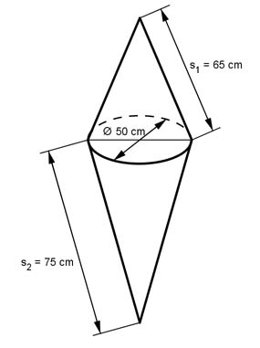
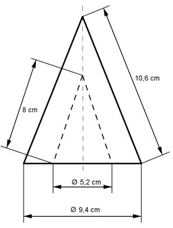
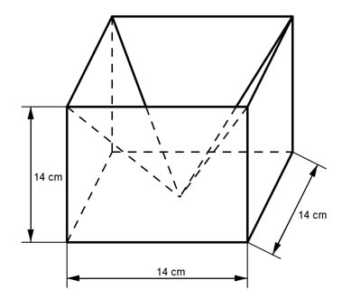
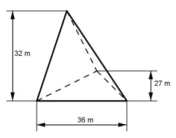
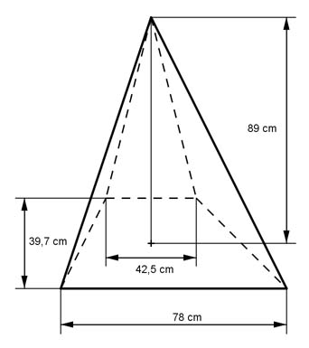

Aufgabe 195
Wie groß ist die Oberfläche O des dargestellten Körpers?
 O = cm2
O = cm2
Wie löse ich Matheaufgaben?
Volumen
Aufgabe 171 Wie groß ist das Volumen V einer Pyramide mit einer Grundfläche von 25 cm² und einer Höhe von 7 cm?
Aufgabe 172 Wie groß ist das Volumen V einer quadratischen Pyramide mit einer Grundseite von 8 cm und einer Höhe von 13 cm? V = cm3
Aufgabe 173 Wie groß ist das Volumen V eines Kegels mit einem Radius des Grundkreises von 10 cm und einer Höhe von 15 cm?
Aufgabe 174 Wie groß ist das Volumen V einer quadratischen Pyramide mit einer Grundseite von 8,4 cm und einer Höhe von 7,2 m? V = cm3
Aufgabe 175 Ein Kegel hat ein Volumen V von 85,1 cm³ und einen Grundkreisradius r von 4,2 cm. Wie groß ist seine Höhe h?
Aufgabe 176 Ein Kegel hat ein Volumen V von 67,8 cm³ und eine Höhe h von 5,6 cm. Wie groß ist sein Grundkreisradius r? r = cm
Aufgabe 177 Ein Kegel hat ein Volumen V von 24,2 cm³ und eine Grundfläche G von 12,3 cm². Wie groß sind seine Höhe h und sein Grundkreisradius r?
Aufgabe 178 Eine quadratische Pyramide hat ein Volumen V von 135,7 mm3 und eine Höhe h von 6,9 mm. Wie groß ist ihre Grundseite a? a = mm
Aufgabe 179 Eine quadratische Pyramide hat ein Volumen V von 76,5 cm3 und eine Grundseite a von 4,2 cm. Wie groß ist ihre Höhe h?
Aufgabe 180 Eine Pyramide hat ein Volumen V von 101,25 cm3 und eine Grundfläche G von 56,25 cm2. Wie groß ist ihre Höhe h? h = cm
Aufgabe 181 Eine quadratische Pyramide hat eine Seitenhöhe hs von 5 cm und eine Grundseite a von 6 cm. Wie groß ist ihr Volumen V? 
Aufgabe 182 Ein Kegel hat eine Mantellinie s von 10 cm und einen Grundkreisradius r von 6 cm. Wie groß ist sein Volumen V?  V = cm3
Aufgabe 183 Eine quadratische Pyramide hat eine Seitenhöhe hs von 4 cm und eine Grundseite a von 3 cm. Wie groß ist ihre Oberfläche O?
Aufgabe 184 Eine quadratische Pyramide hat eine Höhe h von 4 cm und eine Grundseite a von 12 cm. Wie groß ist ihre Oberfläche O? O = cm2
Aufgabe 185 Ein Kegel hat eine Mantellinie s von 3 cm und einen Grundkreisradius r von 2 cm. Wie groß ist seine Oberfläche O?
Aufgabe 186 Ein Kegel hat eine Höhe h von 28 cm und einen Grundkreisradius r von 12 cm. Wie groß ist seine Oberfläche O? O = cm2
Aufgabe 187 Eine quadratische Pyramide hat eine Mantelfläche M von 78,4 cm2 und eine Grundseite a von 5,6 cm. Wie groß ist ihr Volumen V?
Aufgabe 188 Eine quadratische Pyramide hat eine Mantelfläche M von 209,1 cm2 und eine Seitenhöhe hs von 12,3 cm. Wie groß ist ihr Volumen V? V = cm3
Aufgabe 189 Eine quadratische Pyramide hat eine Grundseite a von 9,4 cm und eine Oberfläche O von 291,4 cm2. Wie groß ist ihr Volumen V?
Aufgabe 190 Eine quadratische Pyramide hat eine Mantelfläche M von 434 cm2 und eine Oberfläche O von 783 cm2. Wie groß ist ihr Volumen V? V = cm3
Aufgabe 191 Wie groß ist das Volumen des dargestellten Körpers?  V = cm3
Aufgabe 192 Wie groß ist das Volumen des dargestellten Körpers? 
Aufgabe 193 Wie groß ist das Volumen des dargestellten Körpers?  V = cm3
Aufgabe 194 Wie groß ist das Volumen des dargestellten Körpers? 
Aufgabe 195 Wie groß ist die Oberfläche O des dargestellten Körpers?
Aufgabe 196 Wie groß ist die Oberfläche O des dargestellten Körpers? 
Aufgabe 197 Wie groß ist die Oberfläche O des dargestellten Körpers?  O = cm2
Aufgabe 198 Wie groß ist die Oberfläche O des dargestellten Körpers? 
Aufgabe 199 Wie groß ist das Volumen des dargestellten Körpers?
V = m3
Aufgabe 200 Wie groß ist das Volumen des dargestellten Körpers? 
Aufgabe 201 Ein Kegel hat ein Volumen von 804,248 cm3. Wie groß sind seine Höhe h und sein Grundkreisradius r, wenn sie sich wie 3:2 verhalten? r = cm
Aufgabe 202 Von einer quadratischen Pyramide wird in halber Höhe die Spitze abgeschnitten. Wie groß ist der Abfall in Prozent?
Aufgabe 203 Die Mantelfläche M eines Kegels mit dem Grundkreisradius r = 6 cm ist doppelt so groß wie seine Grundfläche G. Wie groß ist seine Höhe h? h = cm
Aufgabe 204 Eine Pyramide ist 5 cm hoch und hat als Grundfläche ein gleichschenkliges Trapez mit den parallelen Seiten a = 5 cm, c = 3 cm und der Länge eines Schenkels c = 1,5 cm. Wie groß ist ihr Volumen V?
Aufgabe 205 Die Grundfläche und das Volumen eines Zylinders und eines Kegels seien gleich groß. Wie groß ist die Höhe hz des Zylinders, wenn der Kegel eine Hohe hk = 6 cm hat? hz = cm
Aufgabe 206 Ein Zylinder hat als Achsenschnitt ein Quadrat mit einer Seitenlänge von 4,5 cm. Welches Volumen V hat der größtmögliche Kegel, der daraus hergestellt werden kann?
Aufgabe 207 Ein gerader Kegel wird parallel zu seinem Grundkreis so geschnitten, dass sein Volumen halbiert wird. Wie hängen der Grundkreisradius r1 und der Radius der Schnittfläche r2 voneinander ab? r2 = r1
Aufgabe 208 Aus einem Kegel mit einem Grundkreisradius r = 4,9 cm und einer Höhe h von 13,2 cm soll die größte quadratische Pyramide gleicher Höhe gefertigt werden. Wie groß ist der Abfall A?
Aufgabe 209 Der Achsenschnitt eines Kegels ist ein gleichschenkliges Dreieck mit einer Höhe h von 3 cm und der Länge l eines Schenkels von 5 cm. Wie groß sind das Volumen V und die Mantelfläche M des Kegels? V = cm3
Aufgabe 210 Ein Hohlzylinder hat einen Innenradius von 1 cm, einen Außenradius von 3 cm.und eine Höhe von 5 cm. Wie groß sind die Höhen eines volumengleichen Kegels, wenn dessen Grundkreisradius a) dem arithmetischen Mittel oder b) dem geometrischen Mittel der Zylinderradien entspricht?
Aufgabe 211 Wie groß ist das Volumen des Rotationskörpers, wenn a + b = 12 cm und wenn sich a:b wie b:(a + b) verhält? V = cm3
Aufgabe 212 Wie groß ist die Mantelfläche M einer Pyramide mit einem regelmäßigen Sechseck, Seitenlänge = 6 cm, als Grundfläche und einer Seitenhöhe hs von 10 cm?
Aufgabe 213 Ein Würfel und eine Pyramide haben gleiches Volumen von 1 000 cm3 und gleich große Grundflächen. Wie groß ist die Höhe h der Pyramide? h = cm
Aufgabe 214 Wie groß sind die Oberfläche O und das Volumen V eines Oktaeders mit Seitenlängen a von je 4,8 cm?
Aufgabe 215 Aus einer quadratischen Pyramide mit einer Grundseite a von 6 cm und einer Höhe h von 8 cm wird ein Würfel abgetrennt, dessen Grundfläche auf der Pyramidengrundfläche liegt und 4 Ecken auf den Pyramidenseitenkanten. Wie groß sind eine Würfelseite b und der Abfall A? b = cm
Aufgabe 216 das Volumen V und die Mantelfläche M der quadratischen Pyramide? Wie groß ist ihre neue Höhe h, wenn man die Grundfläche beibehält, aber das Volumen um 1/5 verringert?